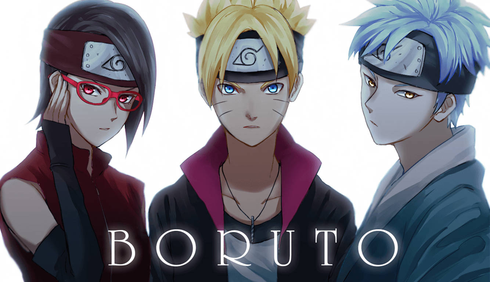

Minato Namikaze is a major character in the Naruto series. He was the Fourth Hokage of the Hidden Leaf Village. He is the husband of Kushina Uzumaki, and the father of Naruto Uzumaki. He is also the father-in-law of Hinata Hyūga, and the paternal grandfather of Boruto Uzumaki and Himawari Uzumaki.
Kushina, who had grown up hating her red hair because kids kept making fun of it, was touched and for the first time, didn't see him as an incapable ninja. Minato and Kushina attended the Ninja Academy together. Initially, Kushina thought that Minato was unreliable and weird, as he dreamed of becoming Hokage but was shy when she was introduced.Than Kushina fell in love with Minato and the two would become a couple.
Naruto Uzumaki's parents, Minato Namikaze (the Fourth Hokage) and Kushina Uzumaki (the previous jinchuriki for the Nine-Tailed Fox spirit) passed away while trying to stop the Nine-Tailed Fox, Kurama, from destroying the Hidden Leaf Village. They successfully stopped the attack by sealing the beast within their infant son, Naruto.
As a child, Naruto was neglected and was only acknowledged as a monster and a demon boy who shouldn't be alive, let alone a Shinobi. He grew up without any parents, without the love of another person. In fact, Naruto has been entirely alone his entire life. So, it's no wonder he is always reaching out for people's attention. He always wanted someone to look at him and acknowledge his existence, even at the expense of his reputation and education. From his dejection, Naruto grew up to have a dream that he would devote his life to, no matter what happened. That dream was to be the Hidden Leaf Villages Hokage and have everyone acknowledge Naruto as the Villages best and strongest Ninja.
After finish Naruto speical training when he came hidden village .Everyone happy to see Naruto. Naruto makes many friends. He's stronger now. He know many new jutsu. Naruto believe that he will bring back Sasuke Uchiha to Hidden Village very soon. Everyone doesn't care much about Sasuke but Naruto never forget Sasuke. Naruto and Sakura (who love Sasuke when she was a child) both miss Sasuke very much. Naruto bond with Sasuke is unbreakable even Sasuke know that but his revenge is more important than this bond. Sasuke take revange for his own brother(Itachi Uchiha)who finished Uchiha Clan(including his Mom and Dad). Sakura hate his brother(Itachi Uchiha) very much.
The Fourth Great Ninja War started in the second half of Naruto and the man primarily responsible for it was Obito Uchiha, who sought help from Kabuto Yakushi. Unlike the other wars, the Shinobi Nations weren't at war with one another. Instead, they were united against a common enemy in the Akatsuki : to protect the Nine-Tails and Eight Tails’ jinchūriki Naruto and Killer Bee from the Akatsuki.The enemy's goal was to collect the Eight and the Nine-Tails to complete the project . Naruto Uzumaki, Sasuke Uchiha, Sakura Haruno, and Kakashi Hatake were the main players in the Shinobi Alliance side, and they were the ones to take down Obito Uchiha.
Naruto and Hinata have known each other since they were kids, but not so much; Naruto only saw her as timid and weird. He was the class clown who had a dream of becoming Hokage one day, and only Hinata, Iruka, and Sasuke had respect for him. She liked to watch him practice in secret. She love him when he was a child. She saw Naruto all suffering.She was always afraid and week but after meet Naruto she try very hard to be strong. Naruto is Hinata's motivation in the very beginning. In the end, They both got married
The Hidden Leaf Village has entered an era of peace and modernization. While Naruto Uzumaki leads the village as the Seventh Hokage, his son Boruto begins his own journey at the Ninja Academy. Boruto's classmates only see him as "the Hokage's son", but his wild and unpredictable personality quickly blows that perception away! With new friends by his side, how will Boruto handle the mysterious incidents occurring around him? A new wind is blowing, stirring up hearts as it goes. The story of Boruto Uzumaki begins now!

Kawaki intends to make the world a safe place where the 7th Hokage, who he loves and cherishes, lives without any fear for his life. However, to do this, Kawaki would also need to get rid of Boruto Uzumaki, who is a vessel for Momoshiki at this moment. Killing all the Otsutsuki also means that Kawaki needs to kill his own brother, Boruto. Of course, Naruto would not simply stand by and watch him attempt to kill Boruto, and to keep him from interfering, Kawaki sent him and his wife, Hinata Hyuga, to a different dimension and seal them there.